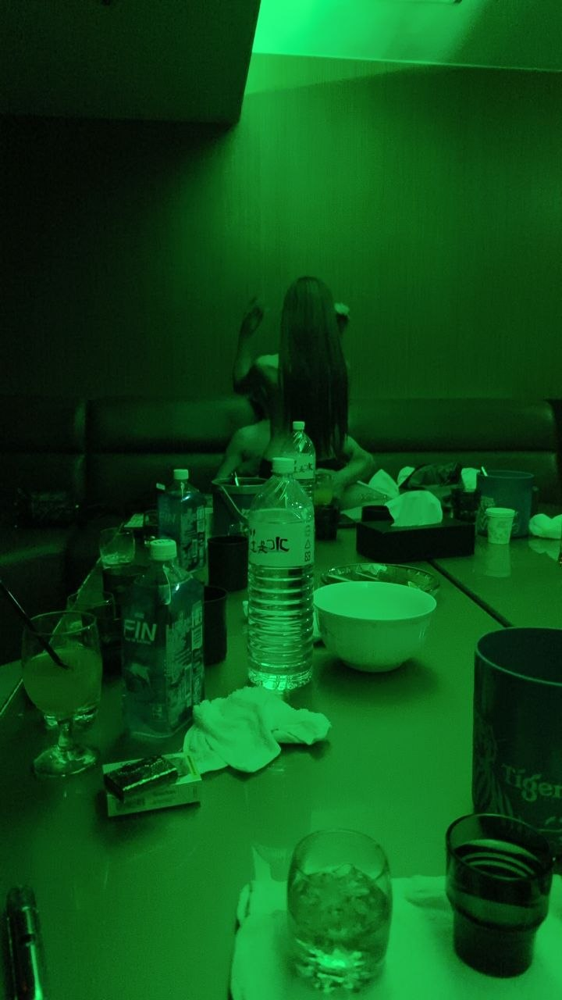
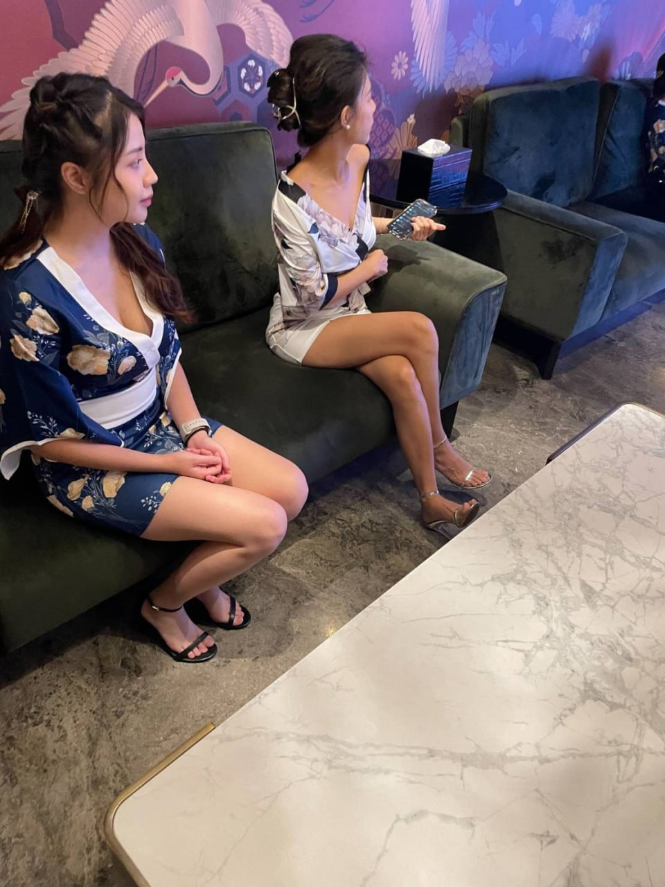
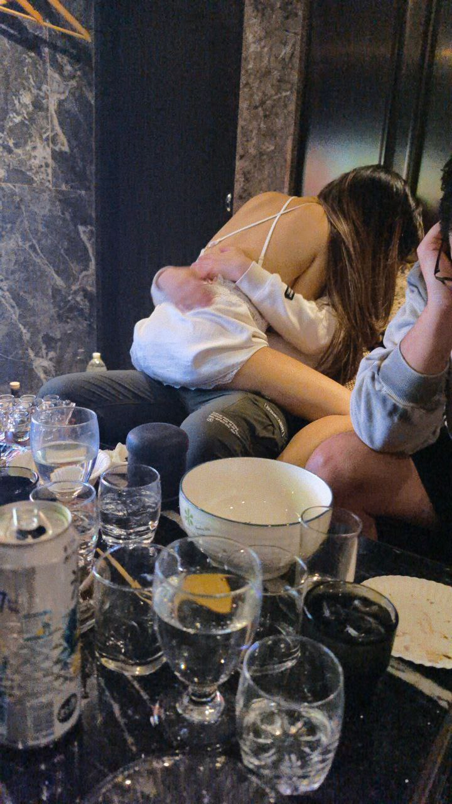
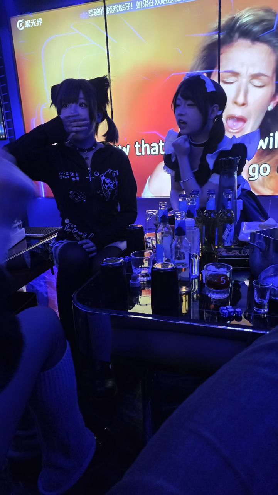
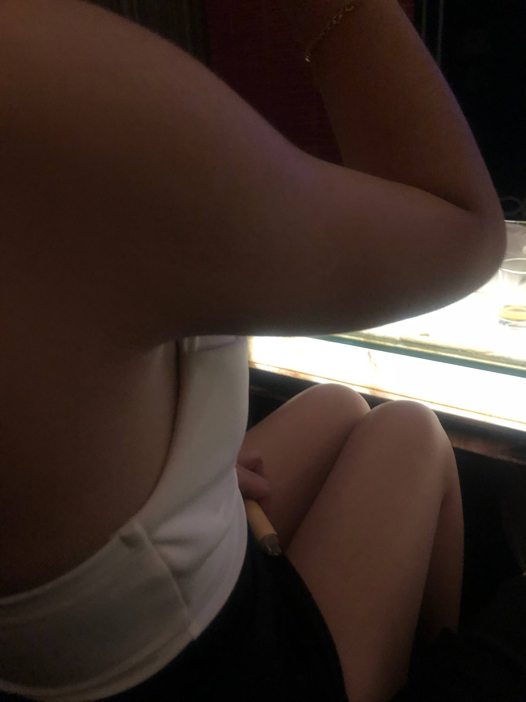

威晶酒店／威晶會所適合什麼場合？
威晶酒店／威晶會所可以優先考慮：低調私人聚會、安靜聊天或商務談話、重視隱私的熟客安排。適合喜歡成熟、低調、安靜、不想太舞台化的客人。威晶酒店／威晶會所屬於便服店／禮便服店類型，適合先依「人數、時間、預算、想要熱鬧或安靜」來判斷是否合適。
威晶酒店／威晶會所偏禮便服與會所型態，適合重視彈性安排、包廂質感與接待隱私的客人。實際營業與價格以預約確認為準。
威晶酒店／威晶會所的定位可從「低調隱私、自然聊天、成熟商務與熟客聚會。」來理解。若你正在比較台北制服店、台北禮服店、便服店或男模會館，建議先看同行客人的年齡層、場合與預算，再決定是否指定這間店。
安排這類店家時，最重要的是先把基本費用拆開看：包廂費、人頭費、服務費、檯費、酒水與加時。只要事前確認清楚，實際到場比較不會因為臨時加點或延長時間而超出預算。
如果是第一次預約威晶酒店／威晶會所，建議先告知台北夜總會俞右：人數、抵達時間、預計停留多久、預算上限、喜歡熱鬧或安靜，以及是否需要慶生、商務接待或女生聚會的氛圍。
| 分類 | 便服店／禮便服店 |
|---|---|
| 區域 | 台北酒店商圈 |
| 地址／商圈 | 台北市酒店商圈 |
| 營業時間 | 晚間營業，請預約確認 |
| 包廂費估算 | NT$ 3,500 起 |
| 人頭費估算 | NT$ 500／人 |
| 服務費估算 | NT$ 1,000／包 |
| 檯費估算 | NT$ 2,500／60 分鐘 |
| 基本時間 | 120 分鐘起 |
依公開網路名單與消費資訊整理，實際營業狀態、價格與包廂安排以預約確認為準。
威晶酒店／威晶會所可以優先考慮：低調私人聚會、安靜聊天或商務談話、重視隱私的熟客安排。適合喜歡成熟、低調、安靜、不想太舞台化的客人。威晶酒店／威晶會所屬於便服店／禮便服店類型，適合先依「人數、時間、預算、想要熱鬧或安靜」來判斷是否合適。
威晶酒店／威晶會所地點參考：台北酒店集中區；地址資訊：台北市酒店集中區。預約時可先說明是否重視安靜包廂、低調進出、商務談話或熟客接待。
威晶酒店／威晶會所特色重點：低調、成熟、自然聊天、適合熟客與小型商務局、包廂隱私感較高。禮便服與會所型態，適合重視包廂質感與接待彈性的客人。威晶酒店／威晶會所的消費通常會受到人數、停留時間、包廂大小、公關／男模人數、酒水、加時與付款方式影響。
便服店與禮便服店介於正式商務與自然社交之間，穿著與互動風格較低調，適合重視隱私、安靜聊天、熟客聚會與小型商務安排。
適合喜歡成熟、低調、安靜、不想太舞台化的客人。若同行成員不喜歡太吵，或希望有比較自然的聊天節奏，便服店通常會是更穩的選擇。
預約時可先說明是否重視安靜包廂、低調進出、商務談話或熟客接待。消費前請確認帶台、訪台、指定、基本檯制、酒水與包廂桌面費的算法。
威晶酒店／威晶會所的消費通常會受到人數、停留時間、包廂大小、公關／男模人數、酒水、加時與付款方式影響。頁面試算採公開常見費用模型估算，正式金額以預約確認與現場規定為準。
低調、成熟、自然聊天
適合熟客與小型商務局
包廂隱私感較高
不喜歡太吵的客人較容易接受
Media
整理店內氛圍、包廂、酒水、燈光與形象照片，預約前可以先感受店家風格與包廂質感。



Related

王牌巴塞隆納便服酒店走便服與低調接待路線，適合熟客、小型商務與不想太高調的聚會。預約時可先說明偏好安靜或熱鬧。

101酒店偏禮便服與會所型態，適合重視隱私、包廂品質與低調氣氛的客人。建議先確認是否有適合人數的包廂。

名亨禮便服會館主打禮便服接待，適合松江南京周邊、商務聚會與低調安排。預約前建議確認帶台、訪台或指定方式。
威晶酒店／威晶會所常見分類為便服店／禮便服店。禮便服與會所型態，適合重視包廂質感與接待彈性的客人。
威晶酒店／威晶會所頁面標示區域為台北主要酒店區域，公開頁面未列出完整地址，建議預約時確認實際集合地點、入口、樓層與包廂安排。
威晶酒店／威晶會所消費通常會看人數、停留時間、包廂大小、酒水、檯費、服務費與加時。包廂費參考約 NT$ 3,500 起、人頭費約 NT$ 500／人、檯費參考約 NT$ 2,500、基本時間約 120 分鐘起，正式金額仍以預約確認與現場規定為準。
適合喜歡成熟、低調、安靜、不想太舞台化的客人。
Reservation
提供台北制服店、林森北酒店、台北禮服店、便服店與男模會館預約諮詢。請先提供日期、時間、人數、預算與偏好店型。